Ticket submitted by sandmanfan (Discord) · 2026-06-11 · level 1 (Retroville) · fixes authored autonomously by Claude (Fable 5) via Claude Code · live demo: exentt.com/jn-engine · previous ticket: 2026-06-11 #1 (8 reports)
Second same-day ticket from sandmanfan, filed in-game with the engine's QA annotate tool (B-key picker → JSON export), this time covering Level 1. Twelve reports, ten root causes — and unlike the first ticket, the biggest item was not a resolver row but a renderer semantics gap: the engine never back-face culled, while the original OMT pipeline culls every polygon in software. That one fix resolved five reports (all four sign items + the blue rocket's sibling defects) and repaired unreported damage across the whole map (the toy-block playhouses got their colors back).
| # | entity / placement | class / tag | cat. | report |
|---|---|---|---|---|
| 1 | 3MER | C3DMERRYGO | TEX | texture is the rocket ship instead of merry-go-round |
| 2 | 3SWN | C3DDOORSWING | MIS | should be the blocks door instead of the one in level2a |
| 3 | Constsign01 | placement | TEX | does not display text. applies to other constsigns |
| 4 | SIGN02 | placement | TEX | should have text saying "Elementary School" |
| 5 | SIGN03 | placement | TEX | should have text saying "Retroland" |
| 6 | SIGN01 | placement | TEX | should have text saying "Downtown" |
| 7 | 3MOM | C3DJUDY | TEX | in general, NPCs and enemies' textures have a dark color tint |
| 8 | 3SAI | SAILBOAT1 | MIS | model should be the sailboat with the appropriate texture |
| 9 | Rocketa | placement | TEX | rocket should be white instead of blue |
| 10 | 3PIC | egg2b | GFX | 3pic assets look wrong, but they shouldn't be visible anyway assuming they can only be seen through the level editor |
| 11 | 3SUV | C3DSUV | TEX | SUV entities missing texture |
| 12 | 3AIO | C3DAIOMTOBJ | MIS | model should not be visible |
MIS = wrong/missing model · TEX = wrong/missing texture · GFX = rendering artifact. Items 3–6 share one renderer root cause. Items 1, 8, 11 were wrong OMT chunk bindings. Items 10 and 12 were authored-visibility flags the engine didn't honor yet.
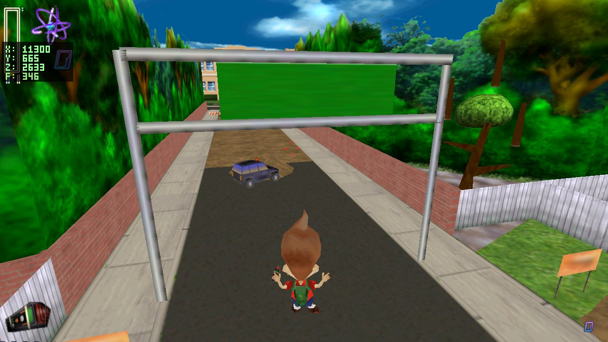
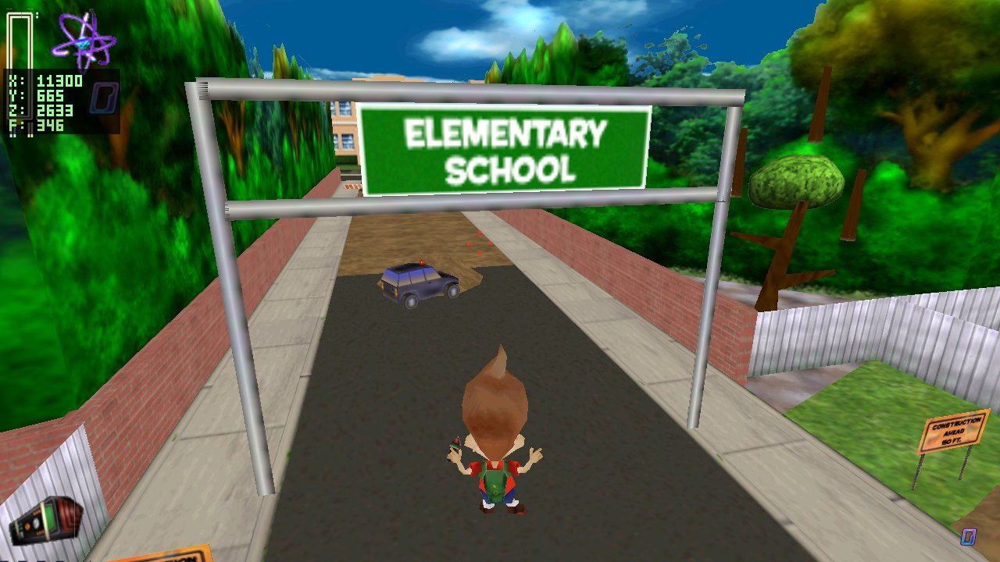
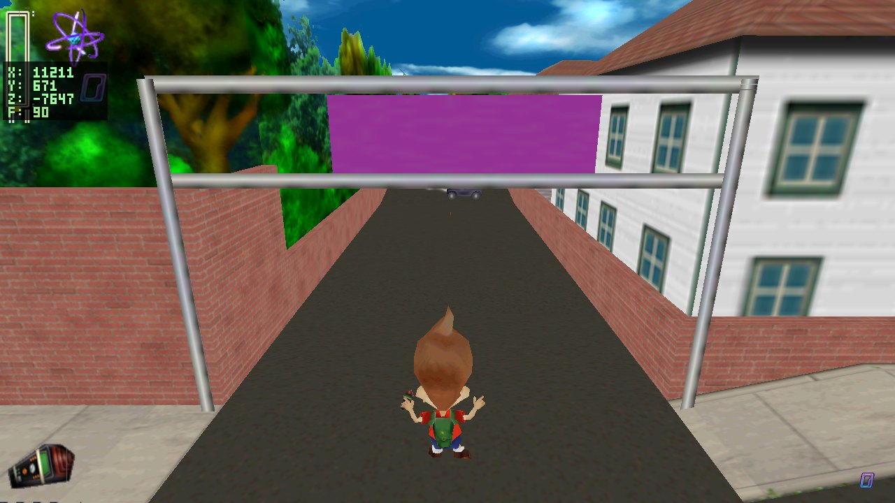
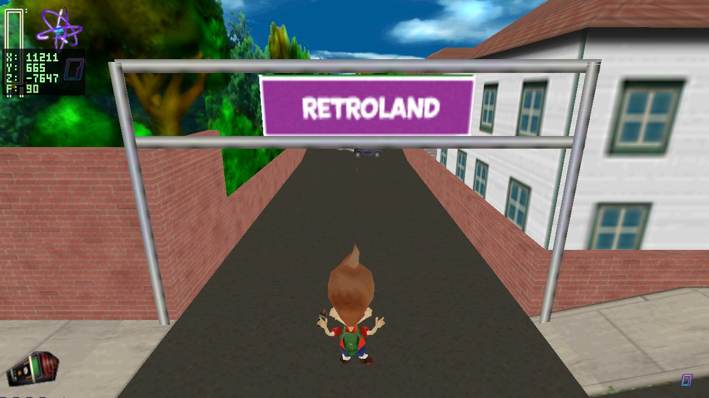
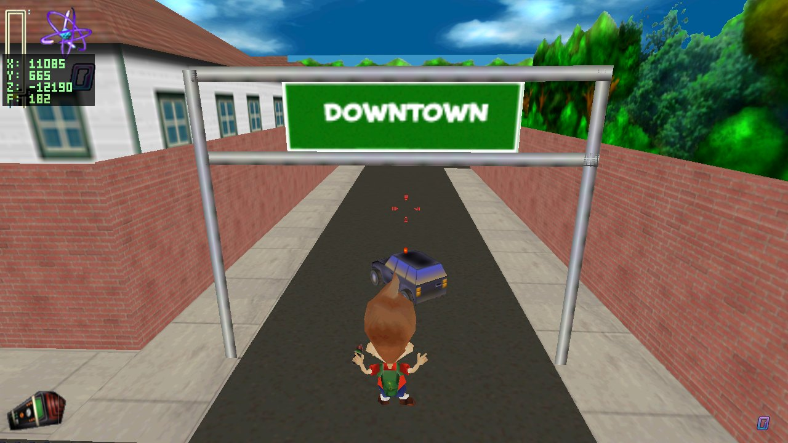
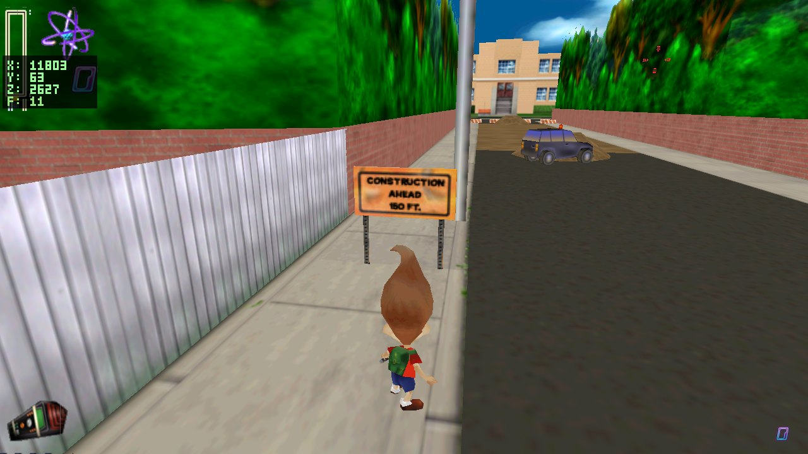
The sign textures were never missing — every GLB already embedded the correct atlas
(below). Dumping SIGN01.glb's triangles showed the text quad present with sane UVs… followed by a
second copy of the same quad with reversed winding and degenerate UVs (sampling a flat color region).
Decoding level1.omt raw confirmed the original authors both: polys 32–33 are the text face,
polys 34–35 the same four vertices re-wound as the board's back.
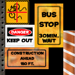
So why did the back face win? The engine draws with glDepthFunc(GL_LEQUAL) (a previous ticket's
fix) and no back-face culling — so the later-drawn back face overwrote the text on equal depth.
The original engine's source (GarageCube Open Media Toolkit) settles the question: OMediaPipeline
back-face culls every polygon in software before submitting — which is exactly why our 4 GB D3D7
capture shows CULLMODE=NONE on 3209 of 3235 draws. The cull happened before D3D ever saw the
triangles. A corpus scan found the per-poly om3pf_TwoSided exemption flag unused in all 5,255
level1 polys: two-sided surfaces are always baked as explicit twin polys, so GL back-face culling is a
loss-free reproduction.
AseModel.cull_backfaces, set for models loaded from
assets/glb/omt/ (OMT-sourced, winding preserved by the exporter); the renderer enables
GL_CULL_FACE around their draws. GL's defaults (cull back, front=CCW) match the data — no
state beyond the enable. Side bonus: block playhouses regained their face colors, and the level2b
START banner no longer mirror-bleeds its text through the cloth's back side.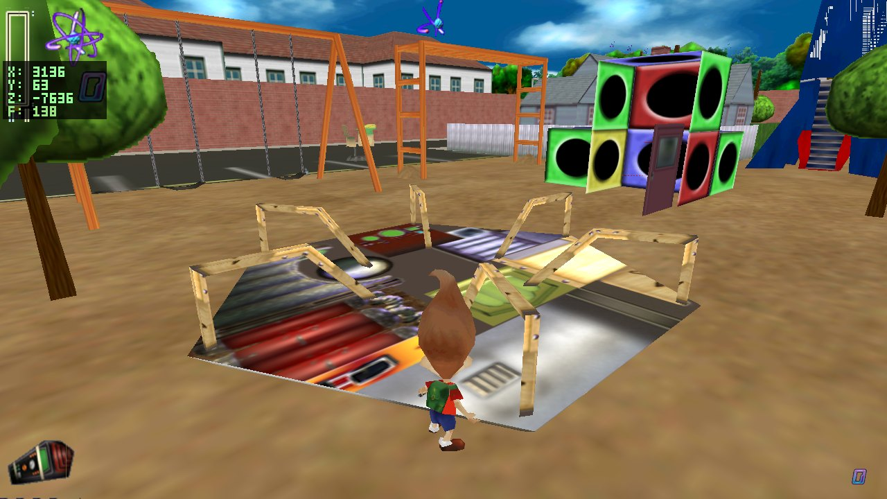
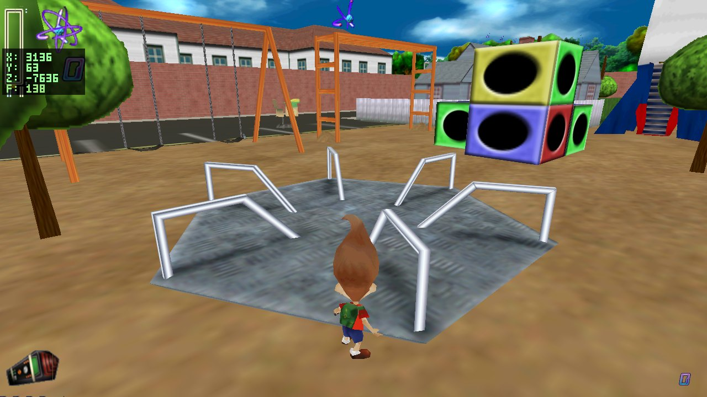
The old resolver row's own comment said objects.omt id-16 — but bound
Rocket.ASE, which is shape 15. Dumping the objects.omt 3DSh chunk table:
shape 13 SailBoat shape 14 RocketPad shape 15 Rocket shape 16 RideSpin shape 17 Swing
Shape 16 is RideSpin — the playground spinner. The old ASE export of it was also a stale
partial read (26 of 85 verts); the toolkit's GLB exporter reads it fully, textured by its authored
MetalPlate canvas.
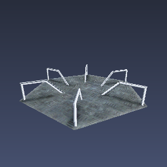
assets/glb/omt/RideSpin.glb (new textured
export from objects.omt).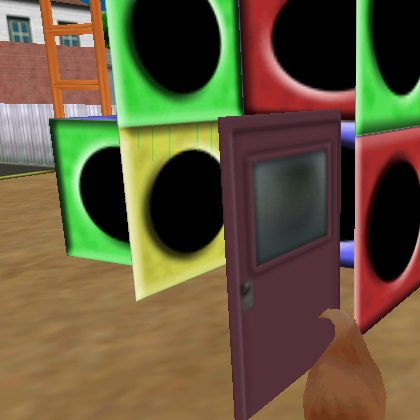
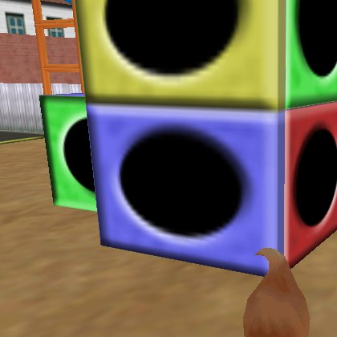
The decomp spec docs/decomp/C3DSwingDoor.md shows the class registers per-instance
ASEFile/PNGFile .gam properties. Reading every level's 3SWN rows:
Level1.gam C3DDOORSWING blocksdoor.ase blocksdoor.png level2a.gam ldoor downdoor2a.ase doorfowl.png level2a.gam C3DDOORSWING door2a.ase doorfowl.png Level3.gam mummydoor showmedoor.ase showmedoor.png level3a.gam C3DDOORSWING pyramiddoor1.ase pyramiddoor1.png
The reporter's "the one in level2a" was literally correct — the hardcoded doorfowl is level2a's door
texture. The fix is generic: honor the authored pair, which repairs the level3/3a/3d swing doors too.
The picker confirms the new door draws at the reported spot
("name":"3SWN","asset":"blocksdoor.ase"); it's easy to miss visually because
BlocksDoor.png is a blocks-pattern texture — a hidden door that blends into the playhouse wall.
ASEFile into the per-object mesh
field; a 3SWN draw branch resolves it (case-insensitively — rows author "blocksdoor.ase", disk ships
"BlocksDoor.ASE") with its authored PNG. The doorfowl row remains only as a fallback.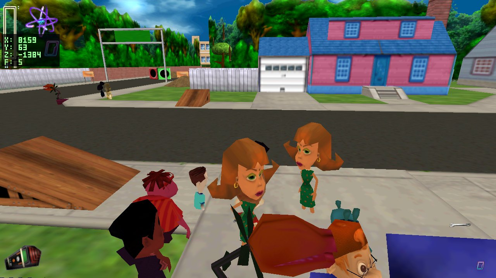
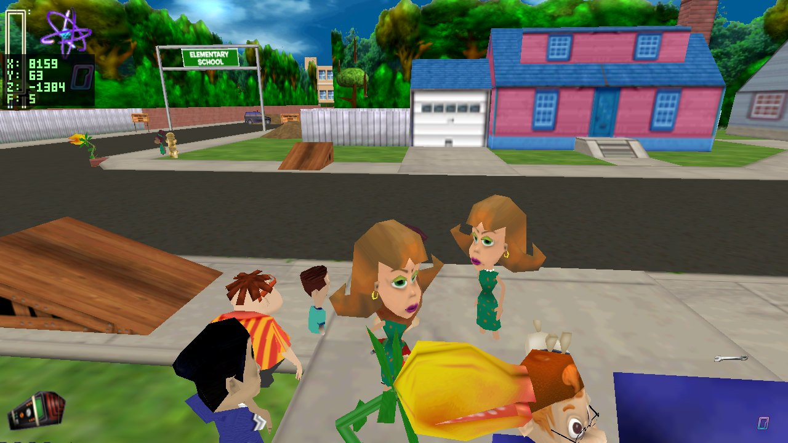
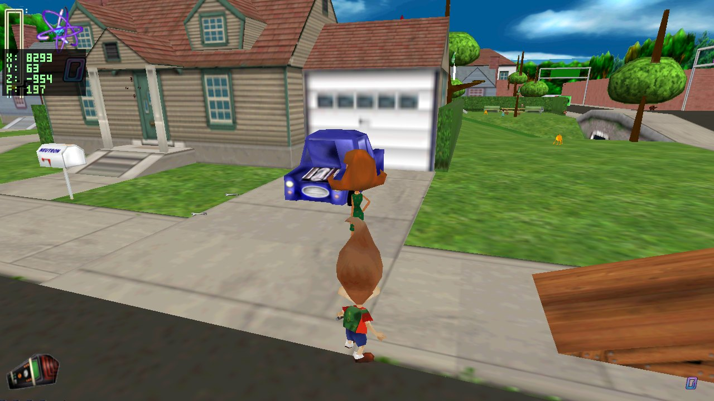
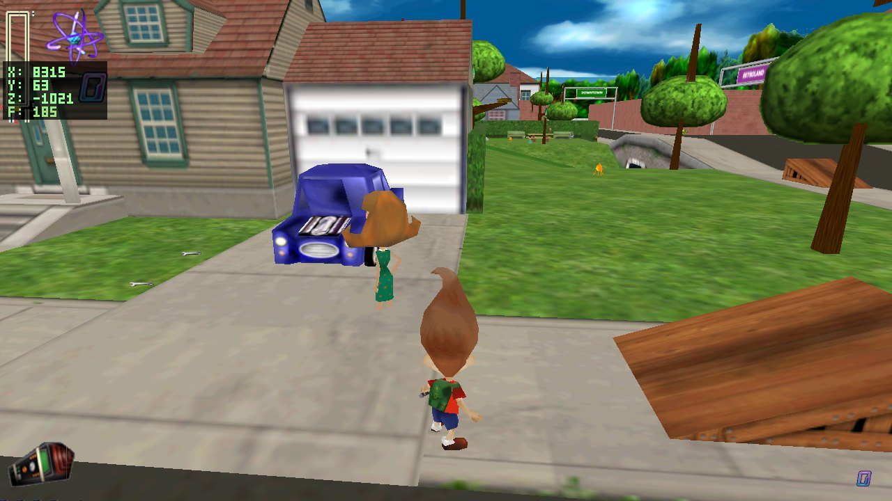
The character ASEs carry 3ds Max viewport colors in *MATERIAL_DIFFUSE:
carlstop.ASE *MATERIAL_DIFFUSE 0.6471 0.1922 0.3765 (dark magenta) nickstop.ASE *MATERIAL_DIFFUSE 0.5373 0.1961 0.1961 (dark red) judystop.ASE *MATERIAL_DIFFUSE 0.9255 0.6980 0.4745 (skin tone)
Our renderer multiplied the texture by that color whenever the material's bitmap resolved.
The original never does: D3D7's default texture stage modulates the texture by the vertex
diffuse (white when the FVF has no color), and material diffuse only enters through lighting —
which Phase 12 measured as LIGHTING=OFF for these scenes (build/canon.json).
Jimmy escaped only by accident: his bitmap paths never resolved, which routed him through a
tint-neutralizing fallback.
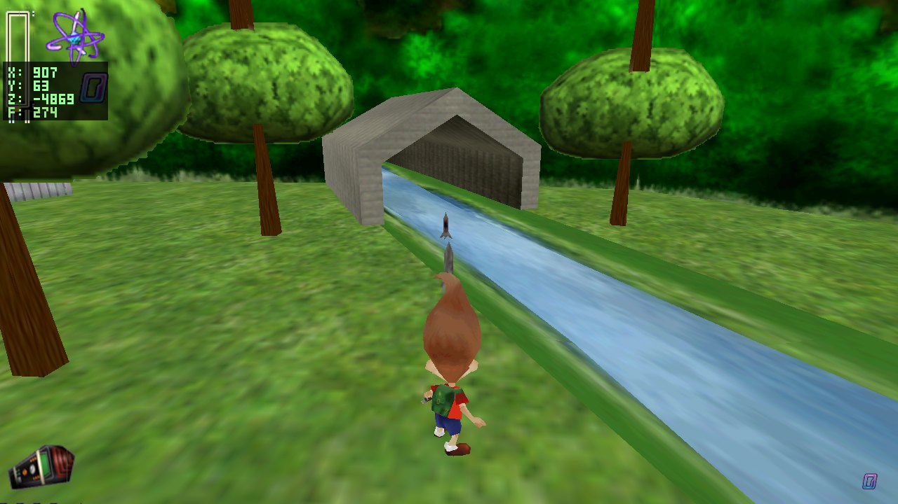
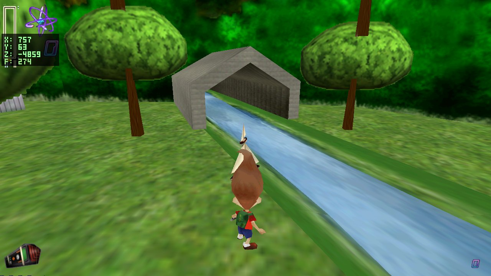
docs/decomp/C3DSailBoat.md already flagged this in its open questions: the class binds
objects.omt entry 13 ("SailBoat", canvas 13), but "the current ASE export's material path points at
image 0009" — the rocketpad canvas. The export predated the canvas-table fix. The toolkit
GLB exporter resolves the canvas correctly:
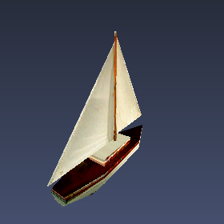
assets/glb/omt/SailBoat.glb; the "boatl"
toy-boat pickup row was migrated to the same mesh.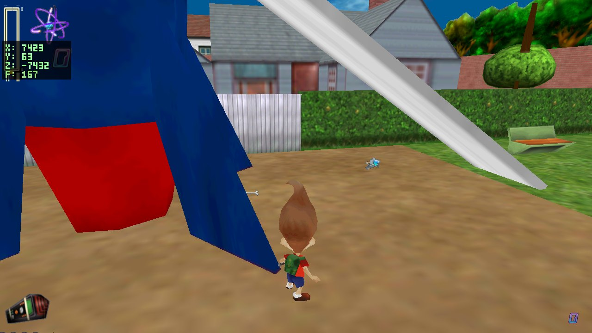
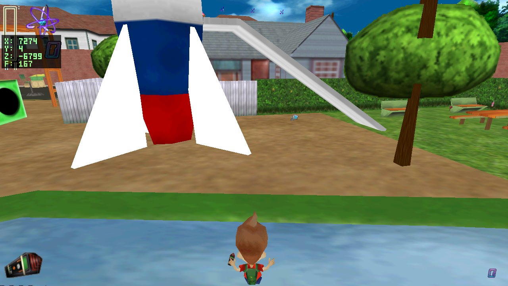
A fun one: the picker names Rocketa.glb, but the big cone is a stack of co-located
placements — Rocketa (the striped 14-poly detail mesh, which was fine) inside
BLOCK_Rocket03 + BLOCKrockettop, the giant playground rocket. BLOCK_Rocket03 has
no material links at all in level1.omt — the OMT pipeline draws it default-material flat white,
which is the white rocket the reporter remembers. Our GLB instead wore a capture-derived texture override
whose own ground-truth record marked it junk (tex_mse 3736 — matcher noise): a dark billboard
texture stretched over the cone read as blue.
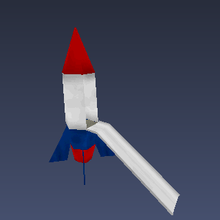
level1_texture_overrides_groundtruth.txt); BLOCK_Rocket03.glb re-exported. The back-face
culling fix (items 3–6) also stopped the rocket's interior shells from bleeding through.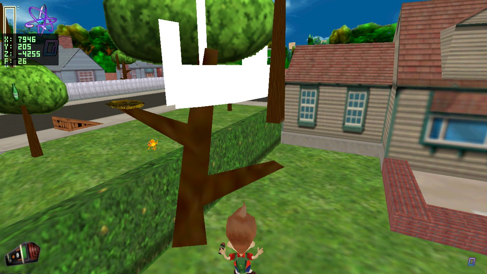
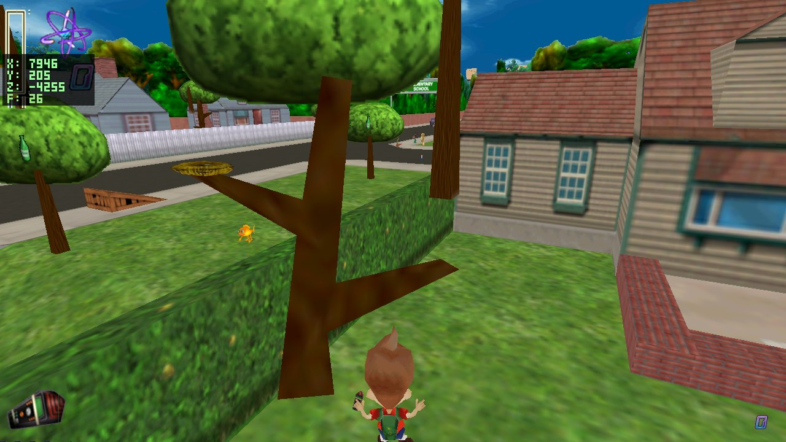
The reporter's instinct was right again. The .gam row authors
InitallyActive=0 (the original registrar's own typo) — a quest-spawned pickup that scripting
activates later; the original never draws it at boot. Two sibling egg pickups author
InitallyActive=1 and remain visible through the per-instance sprite tier (chunk 140 "egg"),
replacing the stale tag row that drew an untextured mesh.
InitallyActive=0
(exact parallel of the existing InitiallyVisible=0 rule), and the stale egg2b tag row was deleted
— the same stale-row family the first ticket's 3BAL/3CON/3LEA fix cleaned up.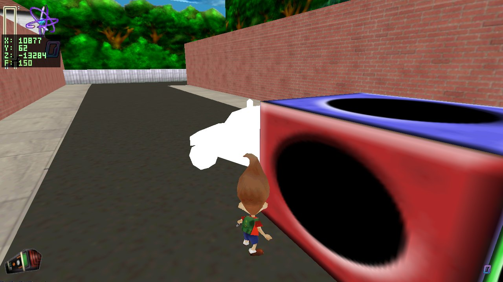
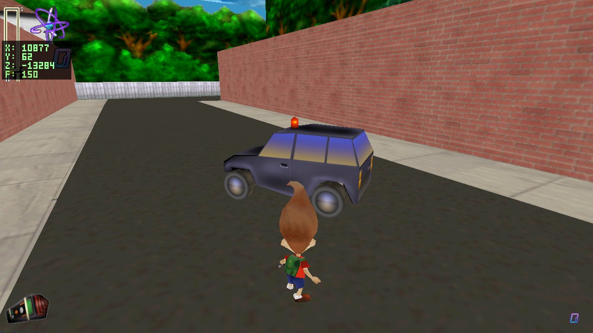
docs/decomp/C3DAISuv.md: the class binds jeep.omt entry 2, and even
recorded the suspicion that the entry "may be a non-image chunk or parser gap". The jeep.omt 3DSh table
resolves it:
jeep.omt shapes: (2, 'truck') (7, 'lawnmower')
Shape 2 is truck — the resolver had bound shape 7's lawnmower (untextured at that).
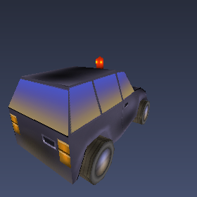
assets/glb/omt/truck.glb (new textured export
from jeep.omt).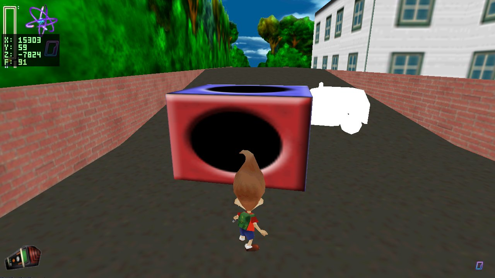
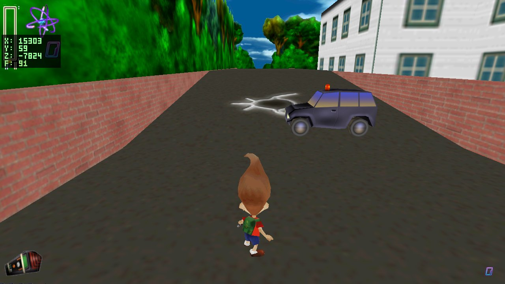
docs/decomp/C3DAIOmtObj.md: the class loads a per-instance OMT shape
(OmtDatabase/OmtIndex). All three level1 rows author
objects.omt index 30 — the "roadclosed" barrier — gated by
RequiredLevel=1 / RemoveLevel=110–320 story-progress windows that the engine doesn't
run yet. The old row drew a generic Box03 for all of them, all the time.
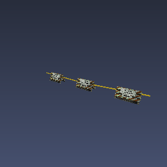
roadclosed.glb exported and documented in the row for the future progress system.The culling and tint changes touch every OMT placement and ASE entity, so the sweep went wider than
the ticket: default-spawn captures of level2, level3, level5a and the level1c house interior
(interiors matter — they're seen from "inside" the mesh), placement/missing-mesh counters
(missing_mesh=0, "all entities resolved" on every level checked), and the level2b
START banner — the co-planar decal whose fix shipped in ticket #1:
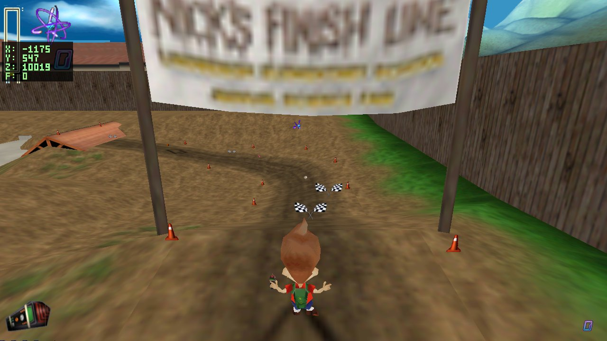
CULLMODE=NONE, which seemed to forbid culling until the
OMT engine source showed the cull happens in software before D3D. Conventions need both the capture
and the source.tools/qa_shot.sh (new this ticket — the previous ticket's manual
process, now scripted), plus a JN_QA_NOCULL env to reproduce the culling defect honestly
after the fix landed.